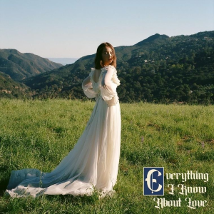
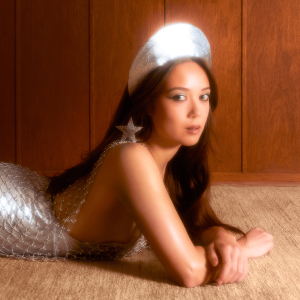
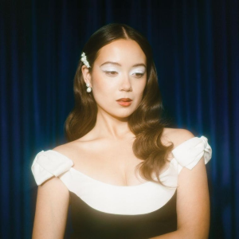

The Music of Laufey
Laufey, a 25-year-old musician from Iceland, adds a pop twist to jazz and classical music. Her mother, a classical violinist from China, encouraged her daughter to begin piano at age 4, followed by cello and voice. Laufey graduated from Berklee College of Music in 2021 and released her debut EP the same year. Though her jazz influences, from Ella Fitzgerald to Billie Holiday, echo in her airy vocals and string instrumentals, her music endears her to young audiences through catchy, heartfelt lyrics about love and growing up. She released her first album, Everything I Know About Love, in 2022 and her second, Bewitched, in 2023. The latter won Laufey her first Grammy.
Photo by Gus Phillippas, live at WFUV.
  "Wish You Love"
"Valentine"
"From the Start"
"Goddess"